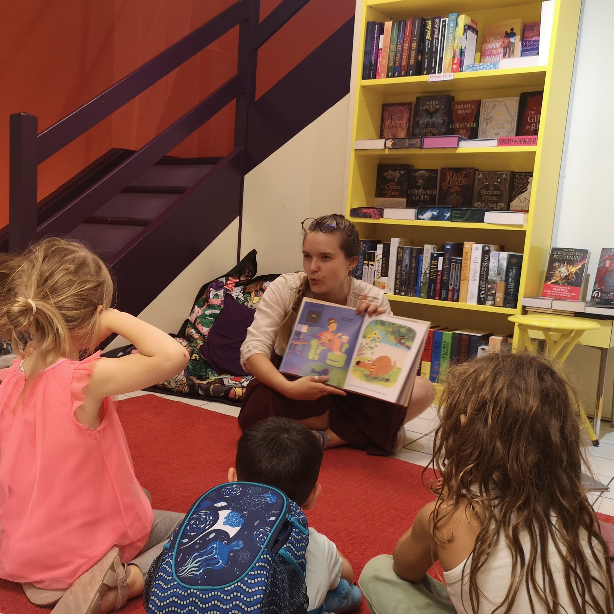

Médiation du livre et de la lecture
Transmettre, recommander, mettre en valeur des œuvres et créer des passerelles entre les ressources et les publics.
Étudiante en Master 2 Gestion de l'information et médiation documentaire, je construis un parcours à la croisée de la librairie, de la bibliothèque et de la médiation culturelle. Mes expériences me mènent dans des contextes très différents, reliés par quelques préoccupations tenaces : accompagner les publics, valoriser les ressources, transmettre des contenus et concevoir des dispositifs adaptés aux usages et aux besoins.
En librairie, j'affine une attention particulière à la recommandation, à la mise en valeur des fonds, à la médiation autour du livre et à la relation avec des publics variés. En parallèle, ma formation et mes expériences en bibliothèque me permettent d'approfondir l'organisation documentaire, la recherche d'information, la conception de supports et la participation à des projets pédagogiques et culturels.
Mon stage au CDI secondaire de l'Institut Florimont, à Genève, renforce cette approche : il me permet d'articuler plus étroitement médiation documentaire, accompagnement des usagers et réflexion autour de l'éducation aux médias et à l'information. J'y contribue à des actions concrètes destinées aux élèves et aux enseignant·es, ainsi qu'à la création de supports pensés pour un usage pédagogique.
Ce portfolio rassemble mon parcours, mes compétences et plusieurs réalisations significatives. Il a pour objectif de donner à voir non seulement ce que j'ai fait, mais aussi la manière dont ces expériences ont contribué à construire mon projet professionnel, entre médiation du livre, valorisation documentaire et transmission.

Trois lignes de travail reviennent d'un projet à l'autre et donnent sa cohérence à ce portfolio : la médiation du livre et de la lecture, la valorisation et l'organisation des ressources, l'accompagnement des publics et la transmission.
Transmettre, recommander, mettre en valeur des œuvres et créer des passerelles entre les ressources et les publics.
Sélectionner, structurer, présenter et rendre plus lisibles des collections, des contenus ou des supports.
Concevoir des actions, des supports ou des dispositifs qui facilitent l'accès à l'information, à la lecture et à la culture.
Cette rubrique rassemble plusieurs traces concrètes de mon travail : vidéos, supports de médiation, réalisations produites en librairie, en bibliothèque et dans le cadre de projets pédagogiques. Ces éléments permettent de montrer non seulement les actions menées, mais aussi la manière dont j'ai conçu, structuré et valorisé des contenus à destination de différents publics.
Reel Instagram publié par la Librerit : une vidéo courte et bienveillante qui met en scène le métier de libraire pour le rendre plus visible et accessible.
Voir la vidéo →Reel Instagram tourné en librairie spécialisée : une recommandation incarnée, pensée pour le format vertical et la médiation sur les réseaux sociaux.
Voir la vidéo →Dossiers pédagogiques pour les 3e et 4e, projet Pierre Wazem, diaporama de classe, quiz de feedback : traces du travail de conception mené au CDI.
Voir les supports →Coups de cœur manuscrits, tables thématiques, espace libraire au Théâtre de Carouge, lectures d'albums avec les enfants.
Voir les réalisations →Coins coups de cœur bibliothécaires et lecteurs, atelier jaspage, scénographie du fonds fiction : des dispositifs pensés pour faire vivre un CDI scolaire.
Voir le projet →LinkedIn pour mon parcours et mon réseau professionnel. Linktree pour les vidéos, sélections et contenus produits en librairie et autour du livre.
« Le livre. Une source de savoir, une accumulation de signes chargés de sens, un précieux héritage qui relie passé et futur. C'est un mage qui me l'a dit un jour : protéger les livres, c'est tout simplement… protéger le monde ! »Mitsu Izumi, Magus of the Library, t. 1, Ki-oon, 2019.
Trois entrées pour parcourir le site selon ce que vous cherchez : les projets concrets, les compétences construites au fil des expériences, ou le parcours dans son ensemble.
Vous souhaitez discuter d'un projet de médiation culturelle ou d'une opportunité professionnelle ? N'hésitez pas à me contacter.